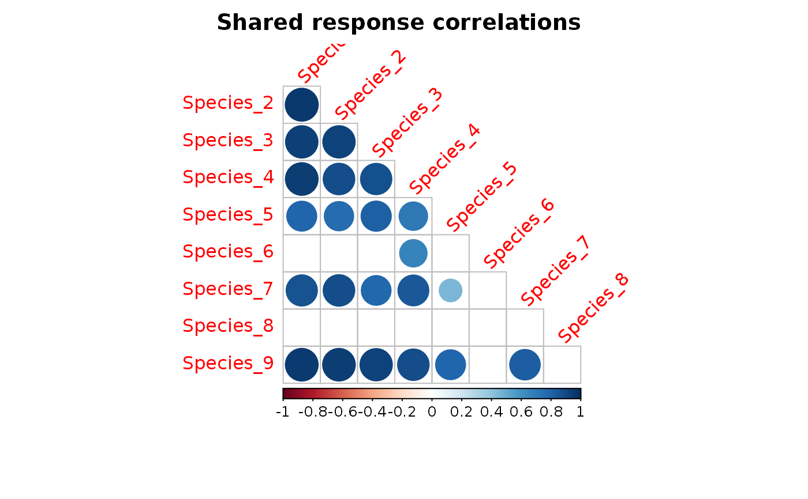

R/get_enviro_cor.R
get_enviro_cor.RdCalculates the correlation between columns of the response matrix, due to similarities in the response to explanatory variables i.e., shared environmental response.
get_enviro_cor(mod, type = "mean", prob = 0.95)
| mod | An object of class |
|---|---|
| type | A choice of either the posterior median ( |
| prob | A numeric scalar in the interval \((0,1)\) giving the target probability coverage of the intervals, by which to determine whether the correlations are "significant". Defaults to 0.95. |
results A list including :
cor, cor.lower, cor.upper | A set of \(p \times p\) correlation matrices, containing either the posterior median or mean estimate over the MCMC samples plus lower and upper limits of the corresponding 95 % highest posterior interval. |
sig.cor | A \(p \times p\) correlation matrix containing only the “significant" correlations whose 95 % highest posterior interval does not contain zero. All non-significant correlations are set to zero. |
cov | Average over the MCMC samples of the \(p \times p\) covariance matrix. |
In both independent response and correlated response models, where the each of the columns of the response matrix y are fitted to a set of explanatory variables given by X, the covariance and thus between two columns \(j\) and \(j'\) due to similarities in their response to the model matrix is calculated based on the linear predictors \(X \beta_j\) and \(X \beta_j'\), where \(\beta_j\) are species effects relating to the explanatory variables. Such correlation matrices are discussed and found in Ovaskainen et al., (2010), Pollock et al., 2014
| Hui FKC (2016). “boral: Bayesian Ordination and Regression Analysis of Multivariate Abundance Data in R.” Methods in Ecology and Evolution, 7, 744–750. |
| Ovaskainen et al. (2010). Modeling species co-occurrence by multivariate logistic regression generates new hypotheses on fungal interactions. Ecology, 91, 2514-2521. |
| Pollock et al. (2014). Understanding co-occurrence by modelling species simultaneously with a Joint Species Distribution Model (JSDM). Methods in Ecology and Evolution, 5, 397-406. |
get_residual_cor jSDM-package jSDM_binomial_probit_block jSDM_binomial_logit
cov2cor jSDM_binomial_logit jSDM_poisson_log jSDM_binomial_probit_block
| Ghislain Vieilledent <ghislain.vieilledent@cirad.fr> |
| Jeanne Clément <jeanne.clement16@laposte.net> |
library(jSDM) # frogs data data(frogs, package="jSDM") # Arranging data PA_frogs <- frogs[,4:12] # Normalized continuous variables Env_frogs <- cbind(scale(frogs[,1]),frogs[,2],scale(frogs[,3])) colnames(Env_frogs) <- colnames(frogs[,1:3]) Env_frogs <- as.data.frame(Env_frogs) # Parameter inference # Increase the number of iterations to reach MCMC convergence mod <- jSDM_binomial_probit_block(# Response variable presence_site_sp=PA_frogs, # Explanatory variables site_suitability = ~., site_data = Env_frogs, n_latent=0, site_effect="random", # Chains burnin=100, mcmc=100, thin=1, # Starting values alpha_start=0, beta_start=0, V_alpha=1, # Priors shape=0.5, rate=0.0005, mu_beta=0, V_beta=10, # Various seed=1234, verbose=1)#> #> Running the Gibbs sampler. It may be long, please keep cool :) #> #> **********:10.0% #> **********:20.0% #> **********:30.0% #> **********:40.0% #> **********:50.0% #> **********:60.0% #> **********:70.0% #> **********:80.0% #> **********:90.0% #> **********:100.0%# Calcul of residual correlation between species enviro.cors <- get_enviro_cor(mod) corrplot::corrplot(enviro.cors$sig.cor, title = "Shared response correlations", type = "lower", diag = FALSE, mar = c(3,0.5,2,1), tl.srt = 45)